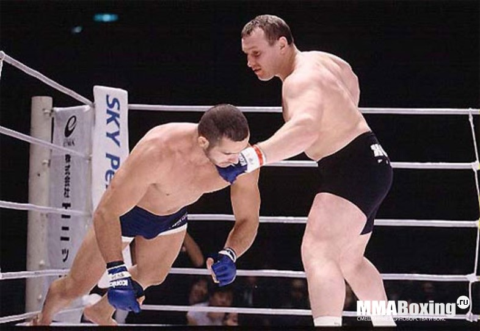

Бойцы мировго уровня |
Общая информация |
|

Украинский боец Игорь Вовчанчин — абсолютная легенда смешанных единоборств.
Игорь Яросла́вович Вовчанчин (род. 8 июня 1973 года, с. Феськи, Золочевского района, Харьковской области, Украинской ССР) — профессиональный украинский кикбоксер и боец смешанного стиля, чемпион мира по кикбоксингу по версии IAKSA, победитель и призёр многих турниров смешанных боевых искусств. В период с 1996 по 2000 год Вовчанчин провёл 29 боёв без поражений. Всего Игорь Вовчанчин провёл 87 боёв из которых в 76 одержал победу. Наряду с Александром Шлеменко занимает шестую строку в мировом рейтинге по количеству побед нокаутом в смешанных единоборствах.
На сегодняшний день, завершив спортивную карьеру, Игорь Вовчанчин не прекратил свои отношения с миром спорта: он является президентом промоутерской компании «Честь воина» и соорганизатором одноимённого проекта турниров «Честь Воина», вице-президентом Украинской ассоциации боевых искусств «Ориентал», занимается благотворительностью (руководит благотворительным фондом Игоря Вовчанчина) в области спорта.
|